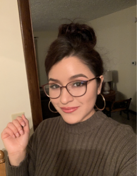

Biography
 Karina is 22 years old, she’ll be turning 23 in May. Born and raised in Nebraska. Karina has four siblings, two brothers, and two sisters. Karina is going to college to become a nurse. She also has one son, he will be five years old this year. Karina enjoys going to the gym on her own time as well as, spending time with her family
Karina also enjoys learning about skin care and has a dream of owning her own spa one day. Karina likes going to the library with her son and reading to him. Karina has a boyfriend, also the father to her son. They are high school sweethearts, they’ve been together for about seven years and she loves him very much.
Karina is Mexican-American and proud of her heritage. She loves to dance and sing in Spanish. She also speaks, writes, and reads fluently in Spanish. Karina loves Vicente Fernandez, and wishes she could have attended one of his concerts before he retired.
Karina is very family oriented. She is very grateful to have a big family and have support from her parents and siblings. She loves that her son is growing up with his cousins and they are always playing together, and sometimes arguing. Karina enjoys the most having barbecues with her family together. Every season is her favorite except for winter, she doesn’t like the cold.
Karina hopes that she can get her BSN one day and live a long and healthy life. She wants to be able to provide for her son and set an example that anything is possible with consistency, and some discipline.